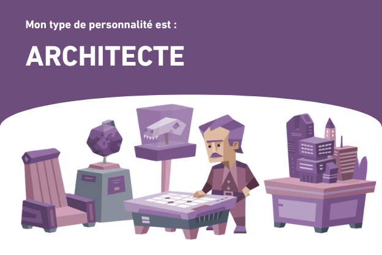

Test, Personnalité, INTJ
Le parcours d'un INTJ déterminé
''
"L’autonomie me permet de gérer mes projets à ma manière, mais je sais aussi que certaines missions exigent une collaboration efficace", explique Lucas.
''
''
"Je me concentre sur des résultats concrets et je pense toujours à la manière dont mes actions peuvent avoir un impact à long terme", précise-t-il.''